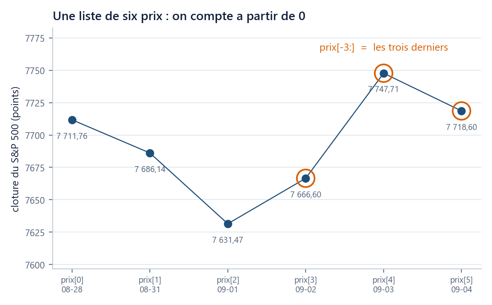

Où suis-je ? unité 3 sur 8
Les unités du chapitre
- 01Six lignes suffisent pour voir…15 min
- 02Un nom retient un résultat…20 min
- 03Une liste range des prix dans l'ordre20 min
- 04Une boucle parcourt25 min
- 05Une fonction nomme un calcul20 min
- 06Un tableau numpy remplace la boucle25 min
- 07Votre machine devient l'ordinateur du cours30 min
- 08Huit fiches d'une page suffisent…45 min
Dans cette unité
Outils : Python de zéro, sans rien installer
Une liste range des prix dans l’ordre, un dictionnaire les range par nom
Deux façons de garder plusieurs valeurs, une seule règle : on compte à partir de 0.
Durée 20 min · Prérequis u01, u02 · Idée unique : deux façons de garder plusieurs valeurs, une seule règle, celle de compter à partir de 0.
La question
Voici les six dernières clôtures du S&P 500 du fichier du cours, dans l'ordre des séances, du 28 août au 4 septembre 2026 :
7 711,76 · 7 686,14 · 7 631,47 · 7 666,60 · 7 747,71 · 7 718,60
Trois besoins apparaissent immédiatement. Le dernier prix : c'est lui qui sert de point de départ à tous les calculs du cours, et il change chaque jour, on ne veut pas le retaper. Les trois derniers : pour regarder une tendance courte sans relire tout le fichier. Et un besoin d'une autre nature : quand on manipule six actifs à la fois, on veut écrire « le prix d'AAPL », pas « le quatrième élément ». Six variables prix_1, prix_2, … tiendraient encore ; 4 151, non.
On essaie d’abord
On range ces six nombres, dans l'ordre, sous le nom prix. Puis on demande à la machine prix[1].
Écrivez votre réponse avant de lire la suite : prix[1] vaut-il 7 711,76 ou 7 686,14 ?
La réponse est 7 686,14, le deuxième. En Python, comme dans la plupart des langages de calcul, on compte à partir de 0 : le premier élément est prix[0]. Si vous avez répondu 7 711,76, vous venez de commettre en trois secondes l'erreur que ce cours vous évitera de commettre pendant un an. C'est le décalage le plus fréquent chez le débutant, et il ne lève aucun message : il rend simplement un nombre faux.
L’idée
Une liste : des valeurs dans l’ordre
prix = [7711.76, 7686.14, 7631.47, 7666.60, 7747.71, 7718.60]
print(prix[0]) # 7711.76 -> le premier
print(prix[1]) # 7686.14 -> le deuxieme
print(prix[-1]) # 7718.6 -> le dernier
print(len(prix)) # 6 -> combien il y en a
Une liste s'écrit entre crochets, valeurs séparées par des virgules ; c'est une suite ordonnée, et l'ordre est celui que vous avez tapé. L'indexation prix[i] extrait l'élément de position i, en comptant à partir de 0. L'indice négatif compte depuis la fin : prix[-1] est le dernier, prix[-2] l'avant-dernier. len (pour length) compte les éléments.
Les deux dernières lignes se lisent ensemble : il y a 6 éléments, donc les indices vont de 0 à 5, et le dernier s'écrit prix[5] ou, plus sûrement, prix[-1]. La seconde écriture continue de fonctionner quand le fichier gagne une séance ; c'est celle du cours.
Une tranche : plusieurs éléments d’un coup
print(prix[-3:]) # [7666.6, 7747.71, 7718.6]
print(prix[0:2]) # [7711.76, 7686.14]
Une tranche prix[i:j] extrait les éléments de la position i incluse à la position j exclue. C'est cette asymétrie qu'il faut retenir : prix[0:2] rend deux éléments, pas trois, et j - i donne toujours le nombre d'éléments obtenus. Une borne peut être omise : prix[-3:] signifie « à partir de l'avant-avant-dernier, jusqu'au bout ».

Ajouter, et sortir des bornes
prix.append(7730.00)
print(len(prix)) # 7
print(prix[7]) # IndexError: list index out of range
Le point, et les deux façons d'écrire un outil.
prix.append(7730.00)se lit « demande àprixde faireappend» : l'objet devant, le point, puis le geste.len(prix)s'écrit dans l'autre sens : l'outil devant, l'objet entre parenthèses. Les deux formes font le même genre de travail, et c'est l'outil qui décide de la sienne, et vous verrez les deux côte à côte en u06 (rendements.mean()d'un côté,np.maximum(...)de l'autre), et l'aide (prix.append?, u01) vous dit toujours laquelle écrire. Une faute sur cette forme lève unAttributeError(u01), jamais un résultat faux : c'est la bonne nouvelle.
append ajoute un élément à la fin ; la liste s'allonge, rien n'est perdu. Après l'ajout il y a sept éléments, donc les indices vont de 0 à 6 : prix[7] n'existe pas. L'IndexError est le message le plus utile du chapitre, parce qu'il attrape précisément l'erreur du « je compte à partir de 1 ». Le message dit out of range : hors des bornes.
Un dictionnaire : des valeurs par nom
L'ordre n'a aucun sens pour six actifs différents. On veut les nommer.
derniers = {"SP500": 7718.60, "AAPL": 319.97, "GLD": 406.77}
print(derniers["AAPL"]) # 319.97
print(derniers["Apple"]) # KeyError: 'Apple'
Un dictionnaire s'écrit entre accolades et contient des couples clé → valeur : à gauche des deux-points le nom (ici un texte), à droite la valeur. L'accès se fait par la clé, jamais par une position. Une clé absente lève une KeyError, dont le message contient la clé fautive : ici, l'orthographe attendue est "AAPL", le code de cotation, pas "Apple".
Ce que rend charger_fil_rouge()
L'outil d'u01 rend précisément ces deux formes :
from mcdp_utils import charger_fil_rouge
fil = charger_fil_rouge()
print(sorted(fil["prix"])) # ['AAPL', 'CAC40', 'GLD', 'LVMH', 'SP500', 'SPY', 'TLT', 'TTE']
print(fil["prix"]["SP500"][-1]) # 7718.600098 <- le format de stockage du fichier (u02)
print(len(fil["prix"]["SP500"])) # 4151
fil est un dictionnaire ; fil["prix"] en est un aussi ; et fil["prix"]["SP500"] est une suite ordonnée de 4 151 clôtures, dont on prend la dernière par [-1]. Les crochets d'u01 n'étaient donc rien d'autre que ces deux gestes enchaînés. Une nuance à garder pour plus tard : ce que rend fil["prix"]["SP500"] n'est pas tout à fait une liste, c'est un tableau, l'objet d'u06. L'indexation et les tranches s'y écrivent exactement de la même façon.
Le piège : copie = prix ne copie rien
prix = [7711.76, 7686.14, 7631.47, 7666.60, 7747.71, 7718.60]
copie = prix
copie[0] = 0.0
print(prix[0]) # 0.0 <- prix a change !
Vous n'avez pourtant touché qu'à copie. L'explication tient en une phrase : = colle un nom à une valeur (u02), et ici la valeur est la liste elle-même. Après copie = prix, il y a deux noms et une seule liste. On appelle cela un alias, et la modification copie[0] = 0.0 est une mutation en place : elle change le contenu de la liste, que les deux noms voient.
La réparation demande une copie explicite :
prix = [7711.76, 7686.14, 7631.47, 7666.60, 7747.71, 7718.60]
copie = prix.copy()
copie[0] = 0.0
print(prix[0]) # 7711.76 <- intact
Ce piège ne lève aucun message. Le symptôme, en pratique, est un résultat qui change quand on réexécute deux fois la même cellule. Il revient en u06, sur les tableaux, sous le nom de vue contre copie, avec une nuance de plus : sur un tableau, même une simple tranche partage la mémoire de l'original. Les cours d'introduction à la programmation les plus solides y consacrent une leçon entière : ce n'est pas un détail de syntaxe.
Vérifiez-vous
(a) Sur une liste de six éléments, que rend prix[6] ?
Réponse
(b) Combien d'éléments rend prix[1:3], et lesquels ?
Réponse
(c) Le portefeuille du cours a six poids : SP500 40 %, CAC 40 20 %, AAPL 10 %, LVMH 10 %, GLD 10 %, TLT 10 %. Liste ou dictionnaire ?
Réponse
(d) (rétrospective) En u02, prix = 7718.60 puis prix = 7747.71 faisait perdre la première valeur. Est-ce que prix.append(7730.00) fait perdre quelque chose ?
Réponse
(e) (rétrospective) Après copie = prix puis copie[0] = 0.0, combien de listes existe-t-il en mémoire ? Et après copie = prix.copy() ?
Réponse
Ce que vous savez faire maintenant
- Ranger des prix dans une liste, en extraire le premier, le dernier, une tranche, et compter avec
len. - Ranger des valeurs par nom dans un dictionnaire, y accéder par clé, et lire un
IndexErrorou unKeyError. - Reconnaître un alias, et le désamorcer par
.copy().
Unité suivante. Extraire un prix à la main va encore ; en extraire 4 151 pour les comparer un par un, non. L'unité u04 fait parcourir toute une suite à la machine et lui fait retenir, au passage, la pire année du portefeuille.